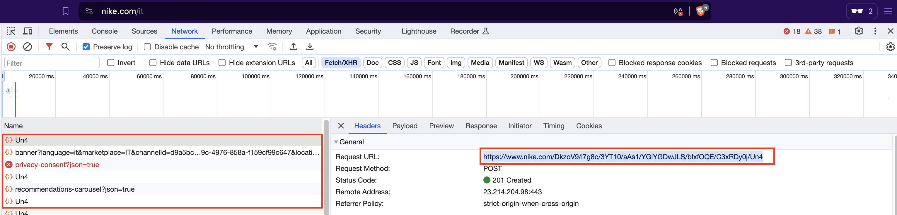
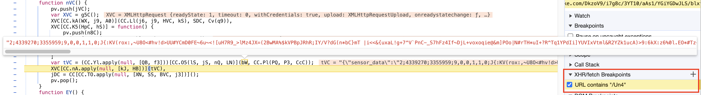
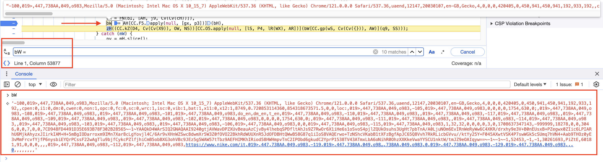
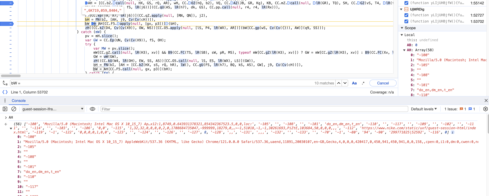
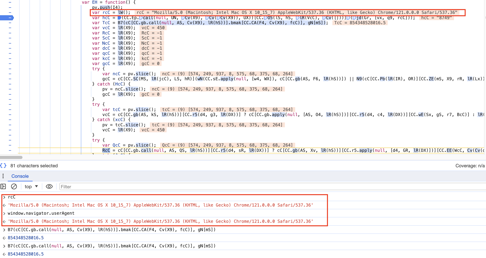
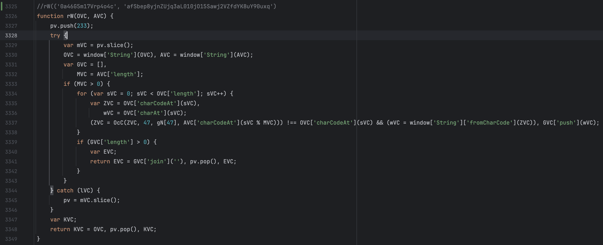
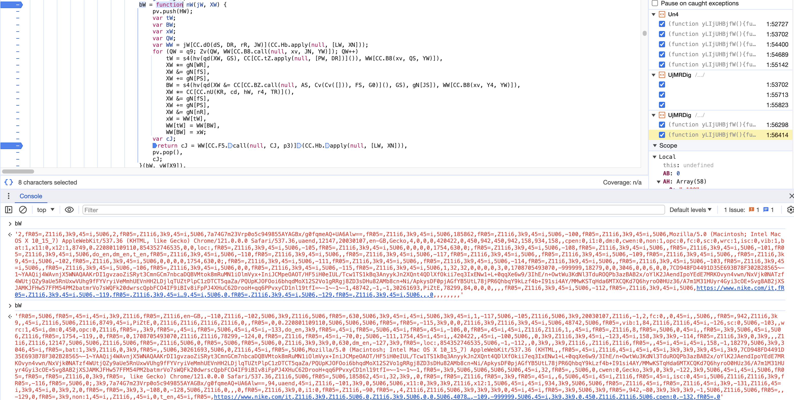
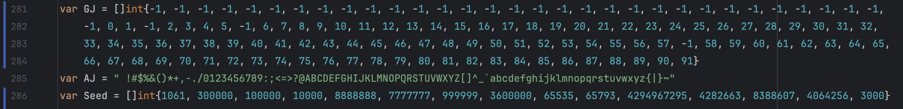

This post is about analyzing the Akamai JavaScript obfuscated file using developer tools to debug the code. We will then use Golang to create a cookie generator to bypass the bot manager. It is a very basic guide, mostly for beginners. Keep in mind that the script makes some minimal changes every week. To have a better understanding of the Akamai bot manager, you can read here.
Flow
1. GET request is made to retrieve the JS script, and the _abck cookie is assigned to the session. If the cookie is invalidated (contains ~0~), it is necessary to submit the sensor again.
2. Generate valid sensor_data.
3. POST request to the endpoint script with the generated sensor_data
4. Repeat steps 2 and 3 three times (or fewer if you have already generated valid cookies).
Analysis
First of all, we are going to take a part of the Akamai URL to set a breakpoint, easily recognizable by the developer tools for its sequence of alphanumeric characters separated by forward slashes.
Then, we are going to set a breakpoint in the script and refresh the page, as you can see in the image below, the variable bW is what we are looking for.
We are now going to the first initialization of bW and printing its value. This value is generated by looping through each element of the AH array and adding a separator, in this test case it will be ,019>,447,738AA,049,o983,. Keep in mind that it will change every time.
Most of the values are hardcoded (like -100 or -105), while others are obtained from window.screen, navigator, and navigator.plugin. To consult all the window instance properties, you can read here.
- window.navigator.userAgent : Mozilla/5.0 (Macintosh; Intel Mac OS X 10_15_7) AppleWebKit/537.36 (KHTML, like Gecko) Chrome/121.0.0.0 Safari/537.36
- window.screen : {availWidth: 450, availHeight: 942, width: 450, height: 942, colorDepth: 30, …}
We can now compare the different arrays, delete the cookies, and refresh the page.

["-100", "Mozilla/5.0 (Macintosh; Intel Mac OS X 10_15_7) AppleWebKit/537.36 (KHTML, like Gecko) Chrome/121.0.0.0 Safari/537.36,uaend,12147,20030107,en-GB,Gecko,4,0,0,0,420420,0,450,942,450,942,158,934,158,
,cpen:0,i1:0,dm:0,cwen:0,non:1,opc:0,fc:0,sc:0,wrc:1,isc:0,vib:1,bat:1,x11:0,x12:1,8749,0.447407606223,854348807082,0,0,loc:", "-105", "0,0,0,0,1754,630,0;", "-108", "", "-101", "do_en,dm_en,t_en", "-110",
"", "-117", "", "-109", "", "-102","0,0,0,0,1754,630,0;", "-111", "", "-114", "", "-103", "", "-106", "0,0", "-115", "1,32,32,0,0,0,0,2,0,1708697614164,-999999,18279,0,0,3046,0,0,10615,0,0,7CD948FD4491D35E693B78F302B28565~-1~/vgSV7OW7Uxm4k4+QiicO6KFZA==~-1~||-1||~-1,52290,-1,-1,
30261693,PiZtE,49138,66,0,0,0,,,", "-112", "https://www.nike.com/it", "-119", "-1", "-122", "0,0,0,0,1,0,0", "-123", "", "-124", "", "-126", "", "-127", 8, "-128", ",,", "-131", ",,,", "-132", "", "-133", "", "-70", "-1", "-80", "94", "-90",
"375888554|82690", "-116", 0 ]
Detects various automated tools, such as Selenium and PhantomJS.
cpen:0,i1:0,dm:0,cwen:0,non:1,opc:0,fc:0,sc:0,wrc:1,isc:0,vib:1,bat:1,x11:0,x12:1
1. 8749: User agent signature
func ab(t string) int {
var ret, v, l int
l = len(t)
for i := 0; i < l; i++ {
v = int(t[i])
if v < 128 {
ret += v
}
}
return ret
}
2. 0.447407606223: Random math number
3. 854348807082: Timestamp /2
After analyzing how the array AH has been built, we can notice that a new value will be added to bW. In our case
2,9B4f5,88X7,1488,2,9B4f5,88X7,1488,7a74G7m23Vrp0o5c94...==,9B4f5,88X7,1488,147815,9B4f5,88X7,1488
Right before the User-Agent.
The string is constructed joining the separator with the version tag and a key. The initial portion of the string is generated using the following function:
Instead, the final portion will be hardcoded for the moment as it is not necessary to generate it: AYAGBx/g0fqmeAQ+UA6Alw==.
Akamai now shuffles the string using a seed and specific fixed values from the array gN.
[4095,300000,0,8,9,100000,10000,50,5,14,16,18,25,31,8888888,7777777,4,1,112,2,12,10,1000,100,0.7,0.95,0.98,0.9,0.8,0.1,0.4,0.07,0.025,255,0.22,4294967296,999999,3,17,22,23,3600000,65793,4294967295,4282663,65535,8388607,57,20,3000]
Example of the Shuffle function nW
After analyzing the array gN, we can now create a function to replicate the shuffling. In the image above, you can observe the array bW before and after the string shuffling.
func shuffle(arr []string) []string {
len_array := len(arr)
var XW = 3552821 //this value must be taken from the slit of the cookies bm_sz
var BW int
var xW string
for _ = range arr {
tW := (XW >> 8) % len_array
XW *= 65793
XW &= 4294967295
XW += 4282663
BW = 25288 % len_array
XW *= 65793
XW &= 4294967295
XW += 4282663
XW &= 8388607
xW = arr[tW]
arr[tW] = arr[BW]
arr[BW] = xW
}
return arr
}After the shuffling, the string is encrypted using a custom function. Lopping through each character of the string, the ASCII decimal value of the character is passed as an index to the array GJ. If the value is greater than or equal to 0, the character undergoes addition assignment with the seed modulo the length of the AJ array. The result is then taken modulo the length of the AJ array and added to the ret by array indexing. If the value is less than 0, the character is added to the ret array.
func encrypt(input string, key int) string {
var i, s int
ret := make([]rune, len(input))
for i = 0; i < len(input); i++ {
seed := (key >> 8) & Seed[8]
key *= Seed[9]
key &= Seed[10]
key += Seed[11]
key &= Seed[12]
s = GJ[int(input[i])]
if s >= 0 {
s += seed % len(AJ)
s %= len(AJ)
ret[i] = rune(AJ[s])
} else {
ret[i] = rune(input[i])
}
}
return string(ret)
}We are now going to add the variable fJ, which usually has a similar value to 0,0,0,1,0, as it only subtracts the execution timestamps from functions, to the beginning of the sensor_data. The values 3223605 and 4534849 are obtained from the bm_sz cookie.